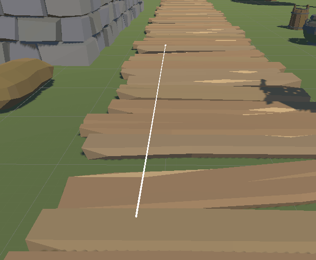
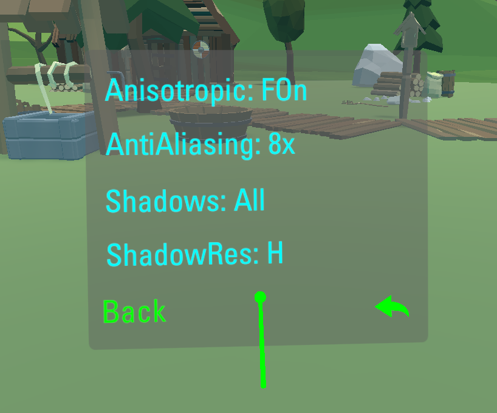
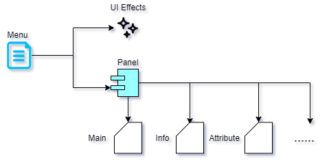
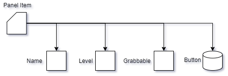
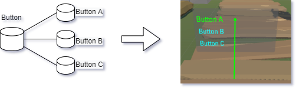
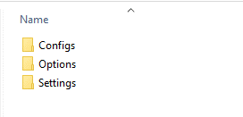
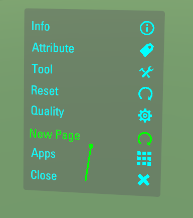
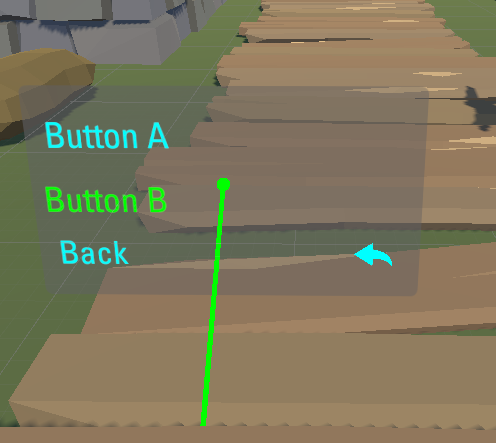

Using In-Game Menu
In this article
Objective
This chapter introduces the In-Game Menu feature provided by VotanicXR.
The basic usage and configuration will be introduced.
In-Game Menu in VotanicXR
The given In-Game Menu can be called by receiving Menu command, or hold the key with index 2 of the controller.

Player can adjust the game setting such as game attribute and quality.

Set up In-Game Menu Sample Scene
Go to Assets > Votanic > VotanicXR_Tutorial > Tutorial09 and open the scene In Game Menu provided.
This chapter focus on the In-Game Menu Editing, no sample scene but sample json option.vxrc is provided.
Using In-Game Menu
The default pages on In-Game Menu are Info, Attribute, Tool, Reset, Quality and Apps.
Info manages the in-game informations provided by VotanicXR, such as message, fps display and log displaying.
Attribute manages the vGear attributes, including the Traveler Mode, Soul Mode, Debug Mode, Tracking, Stereo and Test3D.
Tool manages the in-game tools, detail will be introduced in next chapter.
Quality manages the quality settings, such as anisotropic, anti-aliasing, shadows and shadow resolution.
Apps manages the current application, such as quit the current application.
The detail of the in-game menu is saved in the json file Option.vxro.
Open the file Option.vxro in Assets > Votanic > VotanicXR > vGear > System > Options, it stores the additional option data for vGear.
Menu in the data file stores the transition effects of the Menu and the structure of pages and items. Main is the first level of the Menu, and the remaining are the second level.

For each Panel item, it contains following data, including a set of buttons.

For the Button , it stores a set of button values as follow.

Customizing In-Game Menu
The In-Game Menu can be cutomized for the developer need, including Panel, Panel Item and Item Icon.
Customize Menu Item Icon
Go to
Assets > Votanic > VotanicXR > vGear > Materials > Prefabs > MenuPrefab, which is a prefab made with UI Elements and Input System.V Gear_Menu (Script)component is to manage theIn-Game Menu, you may edit the icons by save the sprite into theIconsexpansion of [Built-in Menu].
Add New In-Game Menu Panel
To add a new page, that is add a new item in main page of menu and add create a new.
Add the follow data to the
Buttonof main page inMenu > Panel > Main.{ "Name": "New Page", "Icon": 3, "InteractionType": "Up", "Command": "Menu=6", "Value": 1.0, "Target": -1, "Commands": [] }The example above use the
Iconof index 3 with respect to the icons saved in the prefab of previous section, index -1 refers to no icon, and index-10irefers to using the default icon with indexith stored in the prefab.The
Commandis usingMenu=ito transfer between pages. Note that the index 0 to 5 is preserved.
Add Menu Panel Item
Add the follow data to the
Panelof the menu data inMenu > Panel.{ "Name": "New Page", "Level": 1, "Grabbable": true, "Button": [ { "Name": "Button A", "Icon": -1, "InteractionType": "Up", "Command": "FunctionA", "Value": 1.0, "Target": -1, "Commands": [] },{ "Name": "Button B", "Icon": -1, "InteractionType": "Up", "Command": "FunctionB", "Value": 1.0, "Target": -1, "Commands": [] },{ "Name": "Back", "Icon": -101, "InteractionType": "Up", "Command": "Menu=0", "Value": 1.0, "Target": -1, "Commands": [] } ] }The example above creates two buttons and a
Backbutton to go back to the main menu. The buttons will send the command to theSDK Managerwhen the item is interacted, and the command can be handled by usingvGear.Cmd.Received(command)orvGear.Cmd.AllReceived()described in Input System.
The editing of the option will be enhanced using Configurator future.
Switch Between Menu Panels
/// as mentioned at above, using command menu=i